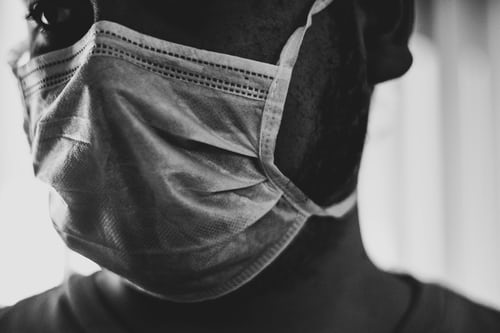

THE NEWS
- India’s drug regulator, the Central Drugs Standard Control Organisation, has allowed to conduct human clinical trials for ‘Covaxin
- It is the first indigenousCovid-19 vaccine candidate to receive this approval.
- These trials are scheduled to start across India in July.
Who has developed the vaccine?
- Bharat Biotech India (BBIL)
- National Institute of Virology (NIV),Pune
- NIV (under ICMR) isolated a strain of the virus from an asymptomatic Covid-19 patient and transferred it to BBIL.
Live-attenuated vaccines
- Weakened (or attenuated) form of the germ that causes a disease
- Because these vaccines are so similar to the natural infection that they help prevent, they create a strong and long-lasting immune response.
- Just 1 or 2 doses of most live vaccines can give you a lifetime of protection against a germ and the disease it causes.
- Live vaccines are used to protect against:
- Measles, mumps, rubella (MMR combined vaccine)
- Rotavirus
- Smallpox
- Chickenpox
- Yellow fever
Inactivated Vaccine
- Inactivated vaccines use the killed version of the germ that causes a disease
- Inactivated vaccines usually don’t provide immunity (protection) that’s as strong as live vaccines – booster shots.
- Inactivated vaccines usually have a better safety record.
- Inactivated vaccines are used to protect against:
- Hepatitis A
- Flu (shot only)
- Polio (shot only)
- Rabies
- Zydus Cadila
- Serum Institute of India
- Panacea Biotec
- The AZD1222 (formerly known as ChAdOx1 nCoV-19) vaccination, developed by researchers at the University’s Jenner Institute, and manufactured by AstraZeneca, has already begun Phase III human trials
- The general stages of the development cycle of a vaccine are
- Exploratory stage
- Pre-clinical stage
- Clinical development
- Regulatory review and approval
- Manufacturing
- Quality control
- Clinical development is a three-phase process.
- New drugs must pass through these three phases of clinical trials before being deemed safe and effective for widespread use.
- Assuming the initial tests go well, it may be 12 to 18 months before this Coronavirus vaccine is ready for public use.
Phase 1 trials examine a small group of people, typically between 20 and 80 individuals, who receive different doses of an experimental treatment. Over the course of several months, researchers monitor how each volunteer metabolizes the given treatment and what common side effects emerge in response to different doses.
Phase 2 trials typically examine several hundred people and monitor participants for periods of from several months to two years. Primarily, Phase 2 trials serve as a secondary measure of safety and help researchers to refine the dosing of a particular medication. At this stage, researchers select participants with characteristics, such as age and physical health, that match those of the people who the vaccine is being developed for. For example, although anyone can contract COVID-19, those of advanced age and those with chronic conditions are more likely to develop severe symptoms, so this could be a consideration in Phase 2 trials.
Phase 3 trials typically follow 300 to 3,000 volunteers over the course of one to four years. With a larger group of people, researchers can take note of unusual side effects of the drug, and by lengthening the study period, they can catch long-term side effects as they emerge. Phase 3 trials must demonstrate that a given drug provides the medical benefits it’s intended to.
After approval from the regulator, the firm has to continue monitoring the use of its vaccine on patients and submit post-marketing surveillance details, which checks for any long-term unintended adverse effects of the product.